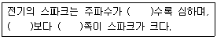

천장크레인운전기능사 (2016-07-10 기출문제)
1과목: 임의 구분
1. 시브 홈 지름이 너무 큰 경우 나타나는 사항에 대한 설명으로 옳지 않은 것은?
- 와이어 로프의 형태를 납작하게 변형시킨다.
- 와이어 로프의 마모를 촉진시킨다.
- 시브의 마모를 촉진시킨다.
- 시브의 수명을 연장시킨다.
(정답률: 78%)

2. 천장크레인의 비상정지장치에 대한 설명 중 옳은 것은?
- 비상정지장치는 작동된 이후 자동으로 복귀되어야 한다.
- 비상정지누름버튼은 매립형 이어야 한다.
- 비상정지장치는 접근이 용이한 곳에 설치되어야 한다.
- 비상정지누름버튼의 색상은 녹색이어야 한다.
(정답률: 78%)
3. 정격하중에 대한 설명으로 옳은 것은?
- 훅의 무게를 제외한 순수 취급 하중
- 평상시 주로 사용하는 취급 하중
- 훅의 무게를 포함한 취급 하중
- 주권과 보권이 표시한 권상능력의 합
(정답률: 71%)
4. 속도제어 제동기는 어떤 때 속도제어를 하는가?
- 권상시
- 권하시
- 권상과 권하시
- 횡행과 권상시
(정답률: 58%)
5. 제어반의 제작 설치 설명 중 틀린 것은?
- 내부 배선은 전용의 단자를 사용해야 한다.
- 접촉단자 체결나사의 풀림, 탈락이 없어야 한다.
- 전선 인입구 피복의 손상 또는 열화가 없어야 한다.
- 외함의 구조는 충전부가 개방형으로 적합한 구조이어야 한다.
(정답률: 86%)
6. 천장크레인 권상용 훅의 국부마모에 의한 사용한도에 해당하는 마모량은?
- 원래 치수의 5% 이내일 것
- 원래 치수의 10% 이내일 것
- 원래 치수의 20% 이내일 것
- 원래 치수의 50% 이내일 것
(정답률: 54%)
7. 안전장치에 사용되는 것으로 횡행, 주행 등의 운동에 대한 과도한 진행을 방지하는 기구는?
- 비상등
- 경보장치
- 타임 릴레이
- 리미트 스위치
(정답률: 82%)
8. 천장크레인의 유압브레이크에서 공기가 유입되면 나타나는 현상은?
- 권상의 경우 상ㆍ하 동작시 급정지한다.
- 주행의 경우 정지시켜도 밀림현상이 생긴다.
- 주행의 경우 기동불능 현상이 생긴다.
- 권상의 경우 기동불능 현상이 생긴다.
(정답률: 80%)
9. 고속형 천장크레인의 집전장치로 중간지지를 갖는 수평배열이며 휠이나 슈를 사용하는 것은?
- 팬터그래프형 집전장치
- 포올형 집전장치
- 고정형 집전장치
- 자유형 집전장치
(정답률: 62%)
10. 주행, 횡행, 권상 등의 일상점검 방법은?
- 무부하로 실시한다.
- 정격 하중을 매달고 실시한다.
- 정격 하중의 1/2을 매달고 실시한다.
- 시험 하중을 매달고 실시한다.
(정답률: 56%)
11. 천장크레인의 무선 원격제어기의 구조에 대한 설명 중 틀린 것은?
- 무선 원격제어기는 사용 중 충격을 받으면 곧바로 작동이 정지될 것
- 무선 원격제어기는 관계자 이외의 자가 취급할 수 없도록 잠금 장치가 되어 있을 것
- 조작 신호 이외의 신호에서 크레인이 작동되지 아니할 것
- 송신기의 최소 보호등급은 옥내용인 경우 IP55, 옥외용인 경우 IP45 이상 일 것
(정답률: 68%)
12. 크레인 안전기준상 차륜 플랜지의 사용 가능한 최대 마모한도는 원 치수의 몇 % 이내인가?
- 10
- 20
- 30
- 50
(정답률: 41%)
13. 천장크레인의 보도 설치 기준으로 맞는 것은?
- 정격하중이 3톤 이상의 천장크레인 거더에는 폭 20cm이상의 보도를 설치해야 한다.
- 보도면으로부터 높이 30cm 이상의 손잡이로 된 난간이 설치되어야 한다.
- 중간대 및 보도면으로부터 높이 1cm 이상의 덛판을 설치하여야 한다.
- 보도면은 미끄러지거나 넘어지는 등의 위험이 없는 구조이어야 한다.
(정답률: 67%)
14. 훅에 대한 설명 중 틀린 것은?(오류 신고가 접수된 문제입니다. 반드시 정답과 해설을 확인하시기 바랍니다.)
- 재료는 탄소강 단강품을 사용한다.
- 훅 해지장치는 균열 및 변형 등이 없어야 한다.
- 마모는 원 치수의 30% 이상이면 교환한다.
- 혹 블록에는 정격하중이 표기되어야 한다.
(정답률: 73%)
15. 천장크레인 운전실에 대한 설명으로 틀린 것은?
- 운전자가 안전운전을 할 수 있도록 충분한 시야를 확보할 수 있는 구조이어야 한다.
- 운전실의 제어기에는 작동방향 표시가 있어야 한다.
- 운전자가 인양물을 잘 볼 수 있도록 운전실에는 조명장치를 설치하지 아니한다.
- 운전자가 쉽게 조작할 수 있는 위치에 개폐기, 제어기, 브레이크, 경보장치를 설치하여야 한다.
(정답률: 82%)
16. 천장크레인에서 주권, 보권 등에서 사용하는 권괴방지 장치는?
- 리미트(Limit)스위치
- 오일게이지
- 집중그리스펌프
- 와이어로프
(정답률: 78%)
17. 천장크레인의 크기 표시 “40/20 ton, Span 28m"에서 Span 28m의 뜻은?
- 주행 차륜 사용 허용 평균속도이다.
- 주행 차륜 중심 간 수평거리가 28m 이다.
- 주행 레일의 길이가 28m이다.
- 횡행 차륜 간의 거리가 28m이다.
(정답률: 62%)
18. 2개의 키를 1쌍으로 하여 축과 보스를 조합하는 형태의 키는?
- 성크키
- 접선키
- 플랫키
- 패더키
(정답률: 63%)
19. 천장크레인의 브레이크 중에서 전기를 투입하여 유압으로 작동되는 브레이크는?
- 오일디스크 브레이크
- 마그네트 브레이크
- 스러스트 브레이크
- 다이나믹 브레이크
(정답률: 47%)
20. 버퍼 스토퍼에 대해 설명한 것 중 옳은 것은?
- 강판으로 접합하여 케이스를 만들어 충격의 부담을 덜어주는 스토퍼
- 새들의 차륜을 보호하기 위하여 씌운 덮개
- 거더의 비틀림을 방지하기 위해 설치해 놓은 스토퍼
- 단단한 고무나 스프링 또는 유압을 이용하여 충돌시 충격을 완화시켜 주는 스토퍼
(정답률: 73%)
2과목: 임의 구분
21. 천장크레인의 운전 시작 전 점검사항이 아닌 것은?
- 천장크레인의 주행로상 혹은 천장크레인이 이동하는 영역안에 장애물 유무 확인
- 천장크레인 정지기구 및 레일 클램프와 같은 고정장치 해제 유무
- 천장크레인 부하 시험 시 과부하방지장치 동작상태 확인
- 운전실내 각종 레버와 스위치의 이상유무
(정답률: 60%)
22. 입력 전압이 440V, 60(Hz)인 3이상 유도전동기가 있다. 극수가 4극이고 슬립이 3% 일 때 회전자 속도는 약 얼마인가?
- 1,746rpm
- 1,780rpm
- 1,800rpm
- 1,880rpm
(정답률: 47%)
23. 천장크레인으로 물건을 운반할 때 주의사항으로 틀린 것은?
- 정격하중의 15% 까지는 초과할 수 있다.
- 적재물이 떨어지지 않도록 한다.
- 로프 등의 안전 여부를 항상 점검한다.
- 운반 중 사람이 다치지 않도록 한다.
(정답률: 85%)
24. 급유해야 할 부위는?
- 브레이크 라이닝
- 감속기어
- 레일의 상면
- 고무벨트
(정답률: 57%)
25. 전기부품의 점검 중 불꽃(spark) 발생의 대비책이 아닌 것은?
- 스위치의 접촉면에 먼지나 이물질이 없도록 한다.
- 전원 차단시에는 반드시 메인측에서 부하측 순서로 행한다.
- 스위치류의 개폐는 급속히 행한다.
- 접촉면을 매끄럽게 유지한다.
(정답률: 50%)
26. 천장크레인으로 중량물 운반시 일반적으로 안전한 높이의 지상으로부터 얼마인가?
- 0.5m
- 1.0m
- 1.5m
- 2.0m
(정답률: 60%)
27. 천장크레인의 조작방법 중 옳지 않은 것은?
- 천장크레인의 컨트롤러의 조작 방향과 작동방향이 일치 하여야 하며 중간 위치에서 작동되도록 한다.
- 주행과 횡행은 안전을 확인한 후 작동하여야 한다.
- 권상 및 권하 컨트롤은 중립위치에서는 작동이 정지하여야 한다.
- 운전자는 신호수의 신호에 따라 운전하여야 한다.
(정답률: 64%)
28. 플랜지형 플렉시를 커플링에는 무엇으로 체결되어 있는가?
- 아이 볼트
- 핀
- 리머 볼트
- 싱크키
(정답률: 45%)
29. 윤활유의 작용으로 틀린 것은?
- 냉각작용
- 방청작용
- 응력집중작용
- 밀봉작용
(정답률: 61%)
30. 축 저널의 손상 원인에 대한 설명으로 거리가 가장 먼 것은?
- 제작상의 불량
- 강성 부족
- 과다한 오일 공급
- 장치 불량
(정답률: 70%)
31. 천장크레인 운전자가 화물을 권상할 때 위험한 상태에서 작업안전을 위해 급정지시키는 비상정지 장치에 대한 설명으로 가장 적합한 것은?
- 작업 종류 시 전원을 차단하기 위한 장치이다.
- 누름 버튼은 적색으로 머리 부분이 돌출되고, 수동 복귀되는 형식이다.
- 누름 버튼은 황색으로 머리 부분이 돌출되고, 자동 복귀되는 형식이다.
- 탑승용(운전석) 크레인일 경우 권상레버와 같이 부착된다.
(정답률: 75%)
32. 천장크레인의 전기기기에서 사용하는 절연에 관한 용어 중 “F종” 절연의 허용 최고온도는?
- 90℃
- 120℃
- 130℃
- 155℃
(정답률: 50%)
33. ( )에 맞는 말을 순서대로 짝지은 것은?

- 낮을, 교류, 직류
- 높을, 교류, 직류
- 높을, 직류, 교류
- 낮을, 직류, 교류
(정답률: 66%)
34. 유도 및 직류전동기 축의 베어링이 과열되는 원인이 아닌 것은?
- 벨트의 장력이 너무 세다.
- 시동 토크가 적다.
- 오일의 점도가 부적당하다.
- 축의 베어링이 변형 되어있다.
(정답률: 66%)
35. 천장크레인의 시브홈의 마모 한도는 와이어로프 지름에 얼마 이하이어야 하는가?모
- 20%
- 30%
- 40%
- 50%
(정답률: 50%)
36. 구름 베어링의 특징으로 틀린 것은?
- 과열의 위험이 적다.
- 충격하중에 강하다.
- 값이 비싸다.
- 하우징(housing)이 크고 설치가 어렵다.
(정답률: 51%)
37. 천장크레인의 주행시 갑자기 장애물을 발견했을 때 가장 먼저 취해야 할 것은?
- 분전반 스위치를 전부 차단한다.
- 컨트롤러를 전부 제로 노치에 놓는다.
- 비상스위치를 누른다.
- 조종레버를 최대한 몸쪽으로 당긴다.
(정답률: 74%)
38. 접선키에서 120° 각도로 두 곳에 키를 끼우는 이유는?
- 작은 동력을 전달하기 위하여
- 축을 강하게 하기 위하여
- 역 회전을 할 수 있게 하기 위하여
- 축 압을 막기 위하여
(정답률: 55%)
39. 권상 시, 갑자기 이상 제동이 걸렸을 때의 원인으로 옳지 않은 것은?
- 조작반 퓨즈가 끊어졌다.
- 열 전동 릴레이가 떨어졌다.
- 마그네트 브레이크용 회로에 이상이 있다.
- 모터의 이상 소음이 발생한다.
(정답률: 56%)
40. 20kW의 전동기가 23ps의 동력을 발생하고 있을 때, 전동기의 효율은 약 얼마인가? (단, 1ps는 735W이다.)
- 64%
- 85%
- 90%
- 99%
(정답률: 57%)
3과목: 임의 구분
41. 크레인에 사용되는 와이어로프의 사용 중 점검항목으로 적합하지 않은 것은?
- 마모 상태 검사
- 부식 상태 검사
- 소선의 인장강도 검사
- 엉킴, 꼬임 및 킹크 상태 검사
(정답률: 70%)
42. 크레인의 권상용 와이어로프의 주유에 관한 사항 중 바른 것은?
- 그리스를 와이어로프의 전체길이에 충분히 칠한다.
- 그리스를 와이어로프에 칠할 필요가 없다.
- 기계유를 로프의 심까지 충분히 적신다.
- 그리스를 로프의 마모가 우려되는 부분만 칠하는 것이 좋다.
(정답률: 64%)
43. 크레인의 와이어로프를 클립으로 고정할 때 클립 간격은 얼마가 가장 적당한가?
- 와이어로프 직경의 2배
- 와이어로프 직경의 4배
- 와이어로프 직경의 6배
- 와이어로프 직경의 8배
(정답률: 46%)
44. 힘의 모멘트가 M = P×L일 때 P와 L은?
- P = 힘, L = 길이
- P = 길이, L = 면적
- P = 무게, L = 체적
- P = 부피, L = 넓이
(정답률: 67%)
45. 2000kgf의 물건을 두 줄걸이로 하여 줄걸이 로프의 각도를 60도로 매달았을 때 한쪽 줄에 걸리는 하중은 약 몇 kgf인가?
- 1455
- 1355
- 1255
- 1155
(정답률: 42%)
46. 줄걸이 작업 시 짐의 무게중심에 대하여 주의할 사항으로 옳지 않은 것은?
- 짐의 무게중심 판단을 정확히 할 것
- 짐의 무게중심은 가급적 높이도록 할 것
- 무게중심의 바로 위에 훅을 유도할 것
- 무게중심이 전후, 좌우로 치우친 것을 주의할 것
(정답률: 75%)
47. 와이어로프에 대한 마모 및 교체기준으로 옳지 않은 것은?
- 한 꼬임에서 소선의 수가 10% 이상 절단된 것
- 소선 및 스트랜드의 돌출이 확인되는 것
- 외부마모에 의한 공청지름 감소가 7% 이상인 것
- 킹크나 부식은 없어도 단말고정을 한 것
(정답률: 61%)
48. 와이어로프의 ‘보통꼬임’에 대한 설명으로 옳지 않은 것은?
- 소선꼬임과 스트랜드 꼬임의 방향이 반대인 것이다.
- 소선의 외부 접촉 길이가 짧으므로 랭꼬임보다 단선과 마모가 적다.
- 킹크(kink)가 생기는 것이 적다.
- 소선은 로프축과 평행하다.
(정답률: 40%)
49. 신호수가 집게손가락을 위로 올려 동그라미를 그릴 때의 신호는?
- 주행
- 권하
- 권상
- 가속
(정답률: 67%)
50. 와이어로프 규격에서 “6호품 6×37 B종 보통 S꼬임”에서 B종의 의미는?
- 소선의 굵기를 표시하는 기호이다.
- 소선의 재료가 황동(Brass)임을 표시한다.
- 소선의 인장강도의 구분을 의미한다.
- 소선의 색채가 청색인 것을 의미한다.
(정답률: 56%)
51. 작업장에서 작업복을 착용하는 이유로 가장 옳은 것은?
- 작업장의 질서를 확립시키기 위해서
- 작업자의 직책과 직급을 알리기 위해서
- 재해로부터 작업자의 몸을 보호하기 위해서
- 작업자의 복장 통일을 위해서
(정답률: 81%)
52. 안전모에 대한 설명으로 바르지 못한 것은?
- 알맞은 규격으로 성능시험에 합격품이어야 한다.
- 구멍을 뚫어서 통풍이 잘되게 하여 착용한다.
- 각종 위험으로부터 보호할 수 있는 종류의 안전모를 선택해야 한다.
- 가볍고 성능이 우수하며 머리에 꼭 맞고 충격흡수성이 좋아야 한다.
(정답률: 82%)
53. 다음 중 재해발생 원인이 아닌 것은?
- 잘못된 작업방법
- 관리감독 소홀
- 방호장치의 기능제거
- 작업 장치 회전반경 내 출입금지
(정답률: 65%)
54. 공구 및 장비 사용에 대한 설명으로 틀린 것은?
- 공구는 사용 후 공구상자에 넣어 보관한다.
- 볼트와 너트는 가능한 소켓 렌치로 작업한다.
- 토크 렌치는 볼트와 너트를 푸는데 사용한다.
- 마이크로미터를 보관할 때는 직사광선에 노출시키지 않는다.
(정답률: 60%)
55. 구동 벨트를 점검할 때 기관의 상태는?
- 공회전 상태
- 급가속 상태
- 정지 상태
- 급감속 상태
(정답률: 75%)
56. 안전하게 공구를 취급하는 방법으로 적합하지 않은 것은?
- 공구를 사용한 후 제자리에 정리하여 둔다.
- 끝 부분이 예리한 공구 등을 주머니에 넣고 작업을 하여서는 안 된다.
- 공구를 사용 전에 손잡이에 묻은 기름 등은 닦아내어야 한다.
- 숙달이 되면 옆 작업자에게 공구를 던져서 전달하여 작업능률을 올린다.
(정답률: 82%)
57. 작업 시 보안경 착용에 대한 설명으로 틀린 것은?
- 가스 용접 할 때는 보안경을 착용해야 한다.
- 절단하거나 깎는 작업을 할 때는 보안경을 착용해서는 안 된다.
- 아크 용접할 때는 보안경을 착용해야 한다.
- 특수 용접할 때는 보안경을 착용해야 한다.
(정답률: 82%)
58. 사고를 일으킬 수 있는 직접적인 재해의 원인은?
- 기술적 원인
- 교육적 원인
- 작업관리의 원인
- 불안전한 행동의 원인
(정답률: 77%)
59. 중량물 운반작업 시 착용하여야 할 안전화로 가장 적절하나 것은?
- 중 작업용
- 보통 작업용
- 경 작업용
- 절연용
(정답률: 71%)
60. 안전수칙을 지킴으로 발생될 수 있는 효과로 거리가 가장 먼 것은?
- 기업의 신뢰도를 높여준다.
- 기업의 이직율이 감소된다.
- 기업의 투자경비가 늘어난다.
- 상하 동료간의 인간관계가 개선된다.
(정답률: 72%)
시브 홈 지름이 너무 큰 경우, 와이어 로프가 시브 홈에 느슨하게 들어가게 되어 마모가 촉진됩니다. 하지만 시브의 수명을 연장시키기 위해서는 와이어 로프와 시브 홈의 밀착이 중요합니다. 따라서 시브 홈 지름이 적절한 크기로 유지되어야 시브의 수명을 연장시킬 수 있습니다.